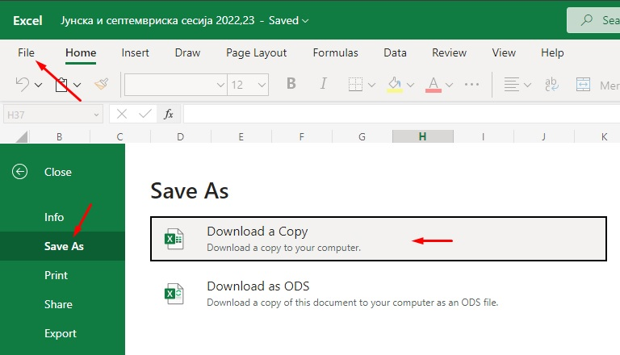

Excel to PDF: FINKI exam schedules
Converts FINKI's exam schedule spreadsheet into a clean, printable PDF. It all runs in your browser - the file is never uploaded anywhere.
Status: Idle
How to use this
- Download the schedule from Excel as a copy:

- Choose the Excel file above.
- The PDF downloads in a few seconds.
If it doesn't work
- If the file won't read, save it again in the older
.xlsformat and try that. - If that fails too, the schedule's layout has probably changed - let me know and I'll update the converter.